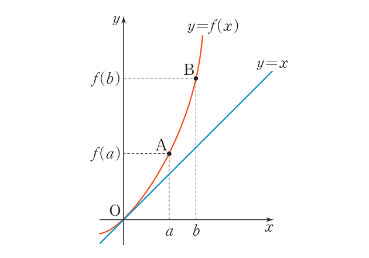

5. 미분가능한 함수 \(y = f(x)\)의 그래프와 직선 \(y = x\)가 다음 그림과 같다. 두 점 \(\mathrm{A}, \mathrm{B}\)가 함수 \(y = f(x)\)의 그래프 위에 있을 때, 보기 중 옳은 것을 모두 고르시오. (단, \(0 \lt a \lt b\))
(교과서 P.65 중단원 기본 05번)

a>0 영역에서 위로 볼록하게 증가" class="block mx-auto max-w-md w-full" />
<보기>
ㄱ. \( \dfrac{f(a)}{a} \lt \dfrac{f(b)}{b} \)
ㄴ. \( f'(a) \lt f'(b) \)
ㄷ. \( f(a) - a \gt f(b) - b \)
🎯 풀이 전략 보기
💡 전략 힌트: 그래프 해석. \(y = f(x)\)는 위로 볼록 증가(우상향, 기울기 점차 커짐) — "아래로 볼록"한 곡선. \(\dfrac{f(a)}{a}\)는 원점과 \(\mathrm{A}\) 잇는 직선의 기울기, \(\dfrac{f(b)}{b}\)는 원점과 \(\mathrm{B}\) 잇는 직선의 기울기.
ㄱ: 곡선이 아래로 볼록 + 원점 통과 \(\Rightarrow\) \(b\)가 더 멀수록 원점과 잇는 직선의 기울기가 더 커짐 \(\Rightarrow\) 참.
ㄴ: \(f'\)은 접선의 기울기. 곡선이 아래로 볼록 \(\Rightarrow\) 오른쪽으로 갈수록 접선 기울기가 점점 커짐 \(\Rightarrow\) \(f'(a) \lt f'(b)\). 참.
ㄷ: \(f(x) - x\)는 \(\mathrm{A}, \mathrm{B}\)에서 곡선과 직선 \(y = x\) 사이의 세로 거리. 그림에서 \(\mathrm{B}\)가 \(\mathrm{A}\)보다 \(y = x\)에서 더 멀리 떨어져 있음 \(\Rightarrow\) \(f(b) - b \gt f(a) - a\), 따라서 \(f(a) - a \gt f(b) - b\)는 거짓.
정답: ㄱ, ㄴ.